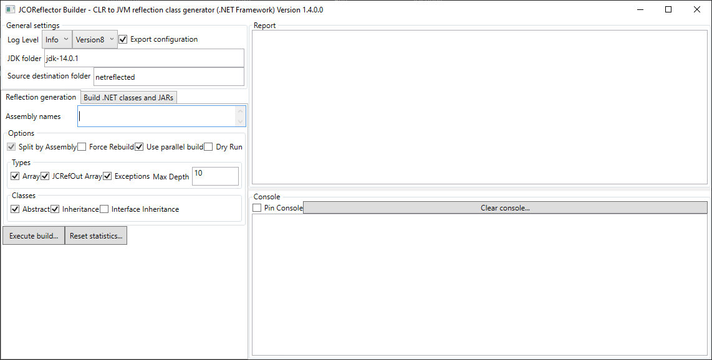

JCOReflector (a .NET Java wrapper)
JCOReflector is a comprehensive suite of libraries and tools to use Java/JVM APIs (Java, Scala, Kotlin, ...) and .NET side-by-side.
Libraries and Tools
| .NET Framework | .NET 8 | .NET 9 |
|---|---|---|
 |
 |
 |
| JCOReflectorEngine | JCOReflectorCLI |
|---|---|
  |
  |
Project disclaimer
JCOReflector is a project, curated by MASES Group, can be supported by the open-source community.
Its primary scope is to support other, public or internal, MASES Group projects: open-source community and commercial entities can use it for their needs and support this project, moreover there are dedicated community and commercial subscription plans.
The repository code and releases may contain bugs, the release cycle depends from critical discovered issues and/or enhancement requested from this or other projects.
Looking for the help of experts? MASES Group can help you design, build, deploy, and manage applications mixing .NET and JVM enabled languages.
The project
JCOReflectorEngine produces a set of .NET wrapper for Java as JARs that are available for download. It's simple to use: you only need to reference JCOReflector.jar in the class-path and use the .NET API within your Java projects like exposed in the example section.
The core of the project is the innovative JCOReflector, a reflection engine which automatically writes Java classes using .NET class reflection. JCOReflector can be used to reflects any .NET assembly (even assembly outside the Microsoft ones) into JARs. The generated wrapper classes are based on the powerful JCOBridge engine and extends its use to simplify the use of .NET from Java(JVM). It was created internally from us to support our customers, now we made it available for everyone.
This project adheres to the Contributor Covenant code of conduct. By participating, you are expected to uphold this code. Please report unacceptable behavior to coc_reporting@masesgroup.com.
Runtime engine
JCOReflector uses JCOBridge, and its features, to obtain many benefits:
- Cyber-security:
- JVM and CLR, or CoreCLR, runs in the same process, but are insulated from each other;
- JCOBridge does not make any code injection into CLR or JVM;
- JCOBridge does not use any other communication mechanism than JNI;
- JVM inherently inherits the cyber-security levels of running .NET (CLR);
- Direct access the CLR from any JVM application:
- No need to learn new APIs: we try to expose the same .NET APIs in Java style;
- No extra validation cycle: bug fix, improvements, new features are immediately available;
- Documentation is shared.
Have a look at the following resources:

History of the project
This project started in 2019 with the aims to create a set of Java (JVM) classes which mimic .NET (Framework/6/8) conterparts, in May 2020 the first commit in GitHub. Using this project it is possible to use .NET API in Java and all JVM enabled languages (Scala, Kotlin, and so on). The final output of JCOReflector are JARs. At its first stages no JARs was available: only the JCOBridge engine, the graphical UI that helps to manages reflection and the operations needed to finally build JARs was relased. Starting from recent relases automated continous integration and verification process are in places, so the produced JARs are directly available for download and is no more needed to manually rebuils JARs before use it. Anyway still possible to use JCOReflector to reflects any .NET assembly (even assembly outside the Microsoft ones) into JARs, and because JCOReflector uses templates it is not necessary to manually manages the output, special needs can be addressed dirctly inside the templates.
Simple example
package mscorlib;
import system.*;
import system.io.*;
public class HelloNET {
public static void main(String[] args) {
try {
String filename = "test.txt";
String result = "";
if (File.Exists(filename)) {
result = File.ReadAllText(filename);
Console.WriteLine(result);
result = result + "Java Execution ";
File.WriteAllText(filename, result);
}
Console.WriteLine(result);
Console.WriteLine("Exiting");
} catch (FileNotFoundException fnfe) {
fnfe.printStackTrace();
} catch (Throwable tre) {
tre.printStackTrace();
}
return;
}
}
This is the result:
prompt> This is a text file for read/write operation
prompt> This is a text file for read/write operation Java Execution
prompt> Exiting
To run it runs a command like the following one:
java -cp JCOReflector.jar;. HelloNET
The full example code, and other ones, are in the project test folder.
A basic Scala examples is the following one:
package mscorlib
import system.Console
import system.Environment
object HelloIterator {
def main(args: scala.Array[String]): Unit = {
try {
Environment.GetLogicalDrives.foreach(Console.WriteLine(_))
Environment.Exit(0)
} catch {
case tre: Throwable =>
tre.printStackTrace()
}
}
}
the same example written in Kotlin is the following one:
package mscorlib
import system.Console
import system.Environment
object HelloIterator {
@JvmStatic
fun main(args: Array<String>) {
try {
for (drive in Environment.GetLogicalDrives()) {
Console.WriteLine(drive)
}
Environment.Exit(0)
} catch (tre: Throwable) {
tre.printStackTrace()
}
}
}
Whats in .NET for Java?
From the point of view of .NET it is very simple to use Java classes and it is not necessary to have some kind of reflection classes:
- JCOBridge is able to access and execute directly within a JVM using C# code, from C# it is possible to execute directly Java code with a similar syntax: look at the examples in JCOBridge-Examples.
- The project JNet uses JCOBridge: a developer has some ready made Java classes to be used from .NET.
Current state
The JCOBridge is a mature platform for .NET assembly reflection, the .NET wrapper JARs are available and cover most of the .NET framework functionality.
The reflector executables, available for both Framework and CoreCLR, is limited in the following features:
Implemented in the reflector
- Only public Types are available
- Classes and public accessible methods
- Interface
- Enum: enumeration and flags are available
- .NET exception are translated and thrown in code
- Static classes are managed
- Events
- Arrays: partial support
- Inheritance
- Out/Ref parameters
- Native types managed from JCOBridge are directly mapped to native Java type
- Base types (System.Object, System.Type, System.Enum, System.Exception, System.Collections.ArrayList) are mapped to specific type into a support library (JCOReflector.jar)
- Management of thrown declaration as expected in Java: a generic Throwable is used with all exceptions found in code (used the algorithm in https://stackoverflow.com/questions/986180/how-can-i-determine-which-exceptions-can-be-thrown-by-a-given-method and code from https://docs.microsoft.com/en-us/archive/blogs/haibo_luo/)
- Documentation
Not implemented in reflector:
- Generic types
- Method decoration (Attributes)
- Unsafe methods
- Fields
Limitations
C# and Java are different languages. The reflection process cannot reflects into Java some features available on C#: an example are properties where get/set is automatically choosed from C# compiler Other limitations comes from some differences between the two engines (CLR and JVM). In all cases JCOBridge superside these limitations, but manual operations shall be made: do not change the reflected classes, override them in your code.
How to use the generator tool (JCOReflector)
In the root folder execute:
dotnet build JCOReflector\JCOReflector.sln
or
dotnet build JCOReflector\JCOReflectorCLI.sln
Within the folder bin you will find three subfolders:
- net462 (available only on Windows platform)
- net6.0 (available on .NET 6 supported platforms)
- net8.0 (available on .NET 8 supported platforms)
in each subfolder will be available two executables:
- JCOReflectorCLI the CLI tool;
- JCOReflectorGUI the GUI tool, below some screenshot:


Reflected Assemblies
The folder src/jvm/src contains all reflected classes generated for .NET Framework (net462), 6 (net6.0) and 8 (net8.0). Below the coverage statistics:
Statistics
| .NET Framework | .NET 8 | .NET 9 |
|---|